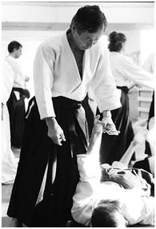

Our Sensei
Nobuyoshi Tamura Sensei
Tamura Sensei was born in Osaka, Japan on the 2nd of March 1933. His lineage is of one of the most prominent families of Japan. His father was a kendo master himself. In 1953 Nobuyoshi Tamura started training in the Aikikai Hombu Dojo as Morihei Ueshiba’s uchideshi. As one of O-Sensei’s best students, Nobuyoshi Tamura acompanied the great founder in many demonstrations. In 1964 he settled in France as Aikikai’s official representative and formed the International Aikido Federation (IAF). He was also the representative of the Superior Council. As the French Aikido Federation’s National Technical Adviser, Tamura Sensei was considered to be the most exalted Aikido master of the World. Along with 65 years of practicing the disciplinary arts (Budo), Tamura Shihan was also an instructor to the Security Forces world wide. Nobuyoshi Tamura Sensei has passed away on July 9th, 2010, causing great grief for us and thousands of Aikidokas world wide.
Nebi Vural Sensei
Nebi Vural Sensei (7. Dan) is a Turkish citizen born in Kars, Turkey. He completed his higher education in France and has been working for an American logistics firm as a "Logistique Manager" for twenty-six years. He has not taken the French citizenship on his own accord.He started combat fighting at the age of 15 and practiced Karate for 7 years. He has been practicing Aikido as Nobuyoshi TAMURA Sensei’s student and Uchideshi since the 70s. He has travelled to Japan several times for Aikido and has trained in several different schools.During the week he teaches in his own dojo and gives seminars during the weekends throughout France. Once a month he teaches in various countries besides France. He has had over 2000 students ranging from the 6th kyu to 5th level black belt.Nebi Sensei has been the French Aikido Federation’s Eminent Technial Director since 1985. He was awarded an Aikido Diploma by the French Government and currently is the Technical Adviser to various countries.
Our Instructor's
Dojo Cho: Cagdas Bilen
Cagdas Bilen is the founder of Poly Aikido Dojo. Being born in 1983, he started practicing Aikido in Middle East Technical University (METU) Aikido Dojo in Turkey during his senior year in Electrical and Electronics Engineering Department. During his education in METU he practiced as a student of Baris Sentuna and Nebi Vural Sensei. Before graduating from METU with Bachelor of Science and Master of Science degrees in Electrical and Electronics Engineering, he worked as president of METU Aikido Society and assistant instructor of METU Aikido Dojo. He received the rank of nidan (2. Dan) from Nebi Vural Sensei in 2010. He enrolled in NYU-Polytecnic Institute in Fall 2007 as a PhD. student and founded the Poly Aikido Dojo in Spring 2008.
Former Instructor: Yegor Ius
Yegor Ius has been practicing Aikido in Poly Aikido Dojo since January 2009 while pursuing a duel degree in Computer Engineering and Electrical Engineering. He is an I.T. enthusiast and instructed Poly-Aikido durring the 2012 school year. Yegor is Ranked 1st Kyu under Cagdas Bilen.
Instructor: Matthew Bobea
Matthew Bobea began his path as a Judo practitioner but left to participate in Poly-Aikido on the day of its establishment. He is the first president of Poly-Aikido as a student organization and remained so until he graduated from Polytechnic University in 2010. Between a successful career in Telecommunication and being a student of Shinjinbukan Karate, Matthew manages time to remain active in the dojo as its present instructor. In June 2015, Matthew Bobea achieved the rank of Nidan (2. Dan) under the guidance of Nebi Vural Sensei.